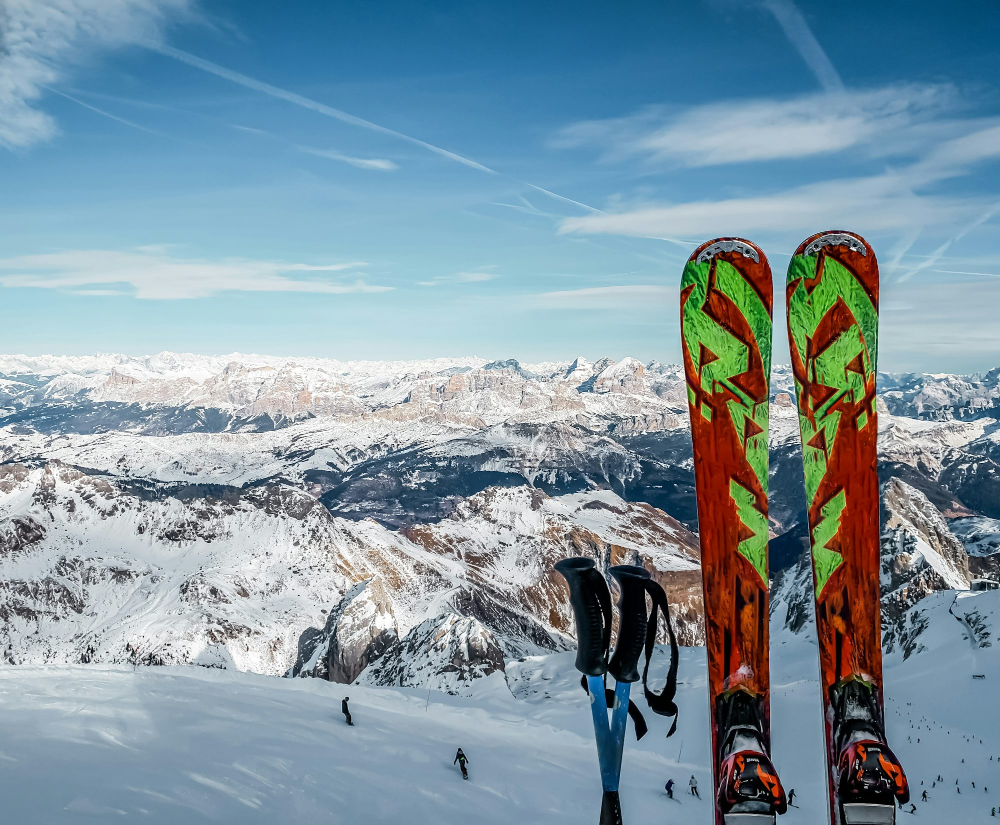

Exploring the Thrill of Snowboarding: A Guide to Styles and Techniques
Dive into the exciting world of snowboarding as we explore various riding styles, essential techniques, and tips for every level of snowboarder.The Different Styles of Snowboarding
Snowboarding has evolved into several distinct styles, each with its unique approach and focus. Understanding these styles can help you find your niche and make the most of your time on the slopes.
1. Freestyle Snowboarding
Freestyle snowboarding is all about creativity and self-expression. Riders perform tricks and maneuvers in terrain parks equipped with jumps, rails, boxes, and halfpipes. The emphasis is on style, originality, and technical skill. In this discipline, riders often showcase their abilities through spins, grabs, and flips, making it an exciting spectacle for spectators and participants alike.
Halfpipe riding is a significant component of freestyle snowboarding. Riders navigate the walls of a U-shaped structure, launching into the air to execute impressive aerial tricks. The flow and rhythm of riding the halfpipe require practice and finesse, as timing is crucial to maximize height and control.
2. Freeride and All-Mountain Snowboarding
Freeride snowboarding emphasizes exploring the mountain's varied terrain, including groomed trails, moguls, trees, and off-piste areas. All-mountain riding is versatile, allowing snowboarders to adapt to different conditions and terrains. This style is ideal for those who enjoy a mix of riding experiences and want to tackle whatever the mountain throws at them.
Freeride snowboarding, on the other hand, often involves venturing into backcountry areas, seeking out fresh powder and untouched slopes. This discipline requires a good understanding of snow conditions, avalanche safety, and navigation skills. Freeriders relish the thrill of exploring new terrain and the challenges that come with it, making it a rewarding experience for adventurous souls.
3. Alpine/Race Snowboarding
Alpine racing is the high-speed aspect of snowboarding, focusing on precision and technique. Riders navigate through a course marked by gates, making sharp turns while maintaining maximum speed. This discipline is all about carving, as riders use their edges to grip the snow and control their speed.
Boardercross, or snowboard cross (SBX), adds a competitive twist, involving multiple riders racing down a course filled with jumps, berms, and obstacles. This discipline combines speed with strategy, as riders must navigate the course while avoiding collisions and maintaining their position against competitors.
Essential Snowboarding Techniques
No matter what style you choose, mastering fundamental techniques is key to improving your snowboarding skills. Here are some essential techniques to practice:
1. Stance and Balance
Finding your natural stance is the first step to effective riding. Most riders either adopt a regular stance (left foot forward) or a goofy stance (right foot forward). Your stance will influence how you maneuver on the board, so it's essential to determine what feels comfortable.
Maintaining balance is critical for control. Keep your knees slightly bent, shoulders aligned with your board, and weight evenly distributed. This balanced stance allows for better responsiveness and stability, particularly when navigating turns or encountering uneven terrain.
2. Turning Techniques
Turning is fundamental to snowboarding. Start with basic heel-side and toe-side turns. To initiate a heel-side turn, shift your weight to your heels and lean back slightly, using your shoulders to guide the board. For toe-side turns, lean forward and shift your weight onto your toes. Practice these turns on gentle slopes before advancing to steeper terrain.
As you gain confidence, experiment with carving techniques. Carving involves using the edges of your snowboard to create clean turns while maintaining speed. The ability to carve efficiently will enhance your performance and allow for smoother transitions on the mountain.
3. Stopping
Learning how to stop is crucial for safety. The easiest method is the heel-side stop. To do this, dig your heel edge into the snow while shifting your weight back. This action creates friction, allowing you to come to a controlled stop. Practice stopping frequently, especially when you're starting, to build confidence.
Safety and Preparation
Safety should always be a top priority when snowboarding. Here are some tips to ensure a safe and enjoyable experience:
1. Wear Protective Gear
Investing in protective gear is essential. A well-fitted helmet is crucial for protecting your head during falls. Additionally, wrist guards, knee pads, and impact shorts can help prevent injuries, especially for beginners. Wearing the right gear allows you to ride with confidence and minimizes the risk of injury.
2. Understand the Mountain
Familiarize yourself with the mountain and its layout before heading out. Know the trail ratings (green for beginners, blue for intermediate, and black for advanced) to choose appropriate runs. Be aware of your surroundings, and always follow the rules of the slopes to ensure a safe experience for yourself and others.
3. Stay Hydrated and Energized
Snowboarding is physically demanding, so staying hydrated and nourished is vital. Bring water and snacks to keep your energy levels up throughout the day. Take breaks when needed, especially if you're feeling fatigued.
Building Community and Finding Your Place
Snowboarding is not just an individual sport; it's a community. Connecting with other riders can enhance your experience and provide valuable support. Joining local clubs or taking lessons from certified instructors can help you improve your skills and make new friends.
Participating in group rides or events fosters a sense of camaraderie among snowboarders. Sharing experiences, tips, and encouragement can motivate you to push your limits and explore new styles of riding. Whether you're hitting the slopes solo or with friends, the snowboarding community offers endless opportunities for connection and growth.
Conclusion
Snowboarding is a thrilling adventure that invites riders to challenge themselves, explore stunning landscapes, and connect with a vibrant community. By understanding the different styles of snowboarding, mastering essential techniques, prioritizing safety, and engaging with fellow riders, you can fully embrace the excitement of the sport. As you strap on your board and venture out into the snow, remember that every ride is an opportunity to learn, grow, and enjoy the beautiful winter landscape. So get out there, carve your path, and let the mountain be your playground!